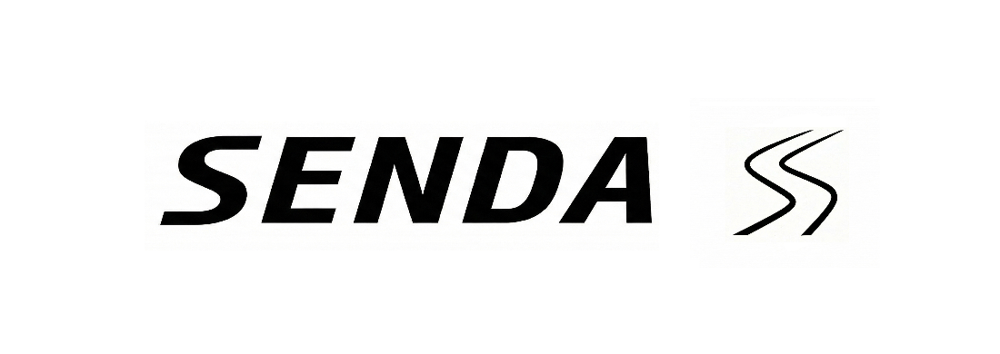

SENDA ist eine neue Schweizer Fahrradmarke, geprägt von jahrzehntelanger Erfahrung im Radsport, in der Technik und im Design. Wir entwickeln Bikes, die kompromisslose Performance mit einer ruhigen, modernen Ästhetik verbinden – Maschinen, die man beim Fahren und beim Betrachten liebt.
Geboren in den Alpen, gebaut für Fahrerinnen und Fahrer weltweit.
SENDA bedeutet Weg auf Rätoromanisch – eine Erinnerung an unsere Herkunft und an das, was uns antreibt. Unsere Wurzeln liegen in der Schweizer Landschaft, wo Präzision, Klarheit und funktionales Design selbstverständlich sind.
Mit Hintergründen in der Materialwissenschaft, der Architektur und dem High‑Performance‑Cycling vereinen wir das Beste aus beiden Welten: Ingenieurskunst für Geschwindigkeit, Kontrolle und Effizienz, kombiniert mit einer klaren, zeitlosen Formensprache.
SENDA entsteht mit einer Community‑Haltung – für Menschen, die Handwerk, Innovation und die Freude am Entdecken neuer Wege schätzen. Wer Teil des ersten Kapitels sein möchte, ist jetzt genau richtig.